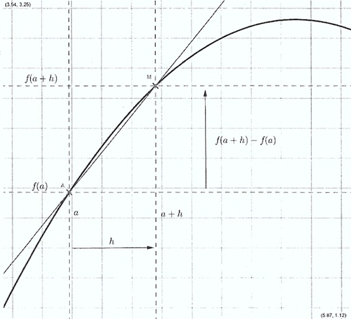
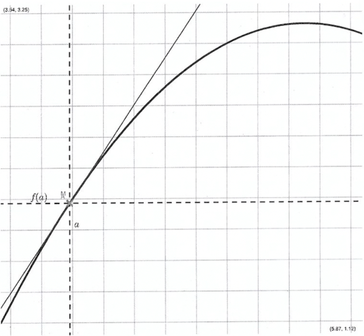

Chapitre 4 - Dérivation
I - Taux d'accroissement
Définition : On considère une fonction \(f\) définie sur un intervalle \(I\). Soit \(a\) un réel de \(I\).
La fonction \(h\to \frac{f(a+h)-f(a)}{h}\) (avec \(h\neq 0\)) est appelée le taux d'accroissement.
Interprétation graphique : Soit \(C\) la courbe représentative de la fonction \(f\).

Le taux d'accroissement de \(f\) entre \(a\) et \(a+h\) est le coefficient directeur de la droite \((AM)\), où \(A\) est le point de la courbe \(C\) d'abcisse \(a+h\).
II - Nombre dérivé
Définition : On considère une fonction \(f\) définie sur un intervalle \(I\). Soit \(a\) un réel de \(I\).
Si le taux d'accroissement de \(f\) entre \(a\) et \(a+h\), c'est à dire \(h\to \frac{f(a+h)-f(a)}{h}\) admet une limite finie lorsque \(h\) tend vers 0, alors on dit que :
- \(f\) est dérivable en \(a\).
- la limite \(\lim_{h \to 0} h\to \frac{f(a+h)-f(a)}{h}\) est le nombre dérivé de \(f\) en \(a\), on le note \(f'(a)\).
Interprétation graphique :

Le taux d'accroissement de \(f\) entre \(a\) et \(a+h\) tend vers 0, le point \(M\) se rapproche aussi près que l'on veut du point \(A\) et la droite \((AM)\) "ressemble" de plus en plus à une tangente à la courbe \(C\) au point \(A\) (c'est à dire une droite qui n'a qu'un seul point d'intersection avec la courbe). Le nombre dérivé, étant la limite du taux d'accroissement, correspond toujours au coefficient directeur (ou pente) de la droite \((AM)\) et donc de la tangente.
Exemples :
-
La fonction \(f:x\to 2x+1\) est-elle dérivable en un réel \(a\) quelconque ?
Pour \(h\neq 0\), on peut écrire :
\(\frac{f(a+h)-f(a)}{h}\)
\(=\frac{2(a+h)+1-(2a+1)}{h}\)
\(=\frac{2h}{h}=2\)Le résultat ne dépend plus de \(h\) donc \(f\) est dérivable \(\forall a\in \mathbb{R}\).
-
La fonction \(f:x\to x^3-7\) est-elle dérivable en \(a=2\) ?
\(f(2+h)=(2+h)^3-7\)
\(=(2+h)^2(2+h)-7\)
\(=(4+4h+h^2)(2+h)-7\)
\(=8+4h+8h+4h^2+2h^2+h^3-7\)
\(=h^3+6h+12h+1\)Pour \(h\neq 0\), on peut écrire :
\(=\frac{f(a+h)-f(a)}{h}\)
\(f'(2)=\frac{f(2+h)-f(2)}{h}\)
\(=\frac{h^3+6h^2+12+1-1}{h}\)
\(=h^2+6h+\frac{12}{h}\)Le résultat dépend de \(h\) donc \(f\) n'est pas dérivable en \(a=2\).
III - Equation de la tangente
Propriété : Si \(f\) est dérivable en \(a\), alors une équation de la tangente en \(A(a,f(a))\) à la courbe représentative de \(f\) est :
\(y=f'(a)(x-a)+f(a)\)
Démonstration :
Posons \(y=mx+p\).
Le coefficient directeur de la tangente est \(f'(a)\).
-
\(y=f'(a)x+p\)
La tangente passe par le point \(A(a,f(a))\) donc on a :
\(f(a)=f'(a)\times a+p\)
\(p=f(a)-f'(a)\times a\)
-
\(y=f'(a)x+f(a)-f'(a)a\)
\(y=f'(a)(x-a)+f(a)\)
Exemple : La fonction \(f:x\to x^3-7\) est dérivable en \(a=2\) et son nombre dérivé est \(f'(2)=12\).
L'équation de la tangente à la courbe de \(f\) en \(A(2,f(2))\), c'est à dire \(A(2;1)\) est :
\(y=f'(a)(x-a)+f(a)\)
En 2 : \(f'(2)(x-2)+f(2)\)
\(=12(x-2)+1\)
\(=12x-24+1\)
\(=12x-23\)
IV - Calculs de fonctions dérivées
1) Définition
Définition : Soit \(f\) une fonction définie sur un intervalle \(I\).
Si la fonction \(f\) est dérivable en tout réel \(a\) de \(I\), on dit que la fonction est dérivable sur l'intervalle \(I\). Pour chaque nombre de \(I\), on peut donc trouver le nombre dérivé \(f'(a)\). Grâce à ce "mécanisme", on définit une fonction : la fonction dérivée de la fonction \(f\), que l'on note \(f'\).
Exemple : Soit \(f\) la fonction carré, \(f(x)=x^2\).
\(\frac{f(a+h)-f(a)}{h}=\frac{(a+h)^2-a^2}{h}\)
\(=a^2+\frac{2ah+h^2}{h}-a^2\)
\(=2a+h\)
\(\lim_{h \to 0} 2a+h=2a=f'(a)\)
C'est vrai \(\forall a\in \mathbb{R}\) donc on définit la fonction dérivée \(f'(x)=2x\).
2) Tableau des dérivées usuelles
| Nom de la fonction \(f\) | Expression de la fonction \(f\) | Expression de la dérivée \(f'\) | Domaine de définition | Domaine de dérivabilité |
|---|---|---|---|---|
| Constante | \(f(x)=k\) | \(f'(x)=0\) | \(\mathbb{R}\) | \(\mathbb{R}\) |
| Affine | \(f(x)=mx+p\) | \(f'(x)=m\) | \(\mathbb{R}\) | \(\mathbb{R}\) |
| Carré | \(f(x)=x^2\) | \(f'(x)=2x\) | \(\mathbb{R}\) | \(\mathbb{R}\) |
| Cube | \(f(x)=x^3\) | \(f'(x)=3x^2\) | \(\mathbb{R}\) | \(\mathbb{R}\) |
| Puissance \(n\) (entier) | \(f(x)=x^n\) | \(f'(x)=nx^{n-1}\) | \(\mathbb{R}\) | \(\mathbb{R}\) |
| Inverse | \(f(x)=\frac{1}{x}\) | \(f'(x)=-\frac{1}{x^2}\) | \(]0;+\infty[\) | \(]0;+\infty[\) |
| Racine | \(f(x)=\sqrt{x}\) | \(f'(x)=\frac{1}{2\sqrt{x}}\) | \([0;+\infty[\) | \(]0;+\infty[\) |
| Cosinus | \(f(x)=cos(x)\) | \(f'(x)=-sin(x)\) | \(\mathbb{R}\) | \(\mathbb{R}\) |
| Sinus | \(f(x)=sin(x)\) | \(f'(x)=cos(x)\) | \(\mathbb{R}\) | \(\mathbb{R}\) |
| Exponentielle | \(f(x)=e^x\) | \(f'(x)=e^x\) | \(\mathbb{R}\) | \(\mathbb{R}\) |
3) Opérations de base sur les fonctions polynômiales
Théorème : Soient \(u\) et \(v\) deux fonctions dérivables et \(k\) un nombre réel. Alors les fonctions construites à partir de \(u\) et \(v\) sont dérivables. Voici comment calculer leur fonction dérivée :
- Somme : \((u+v)'=u'+v'\). Une somme se dérive terme à terme.
- Produit par une constante : \((k\times u)'=k\times u'\)
- Produit : \((u\times v)'=u'\times v+u\times v'\)
- Quotient : \((\frac{u}{v})'=\frac{u'\times v-u\times v'}{v^2}\)
Démonstration : Dérivée d'un produit
\(f(x)=u(x)v(x)\)
On calcule le taux d'accroissement entre \(x\) et \(x+h\) :
\(\frac{f(a+h)-f(a)}{h}=u(x+h)v(x+h)-u(x)v(x)\)
\(=\frac{u(x+h)v(x+h)+u(x)v(x+h)-u(x)v(x+h)-u(x)v(x)}{h}\)
*\(=\frac{(u(x+h)-u(x))v(x+h)}{h}+\frac{(v(x+h)-v(x))}{h}u(x)\)
\(\lim_{h \to 0} *=u'(x)\times v(x)+v'(x)\times u(x)\)
Exemples :
-
\(f(x)=x^3+x^2+\frac{1}{x}\)
\(f'(x)=3x^2+2x-\frac{1}{x^2}\) -
\(g(x)=3\sqrt{x}\)
\(g'(x)=3\times \frac{1}{2\sqrt{x}}=\frac{3}{2\sqrt{x}}\) -
\(h(x)=(x+1)\times(4x^2)\)
On applique la formule \(u'v+uv'\) :
\(h'(x)=u'v+uv'\)
\(=1\times 4x^2+(x+1)\times 8x\)
-
\(i(x)=\frac{\sqrt{x}}{1+x^2}\)
\(i'(x)=\frac{u'\times v-u\times v'}{v^2}\)
\(=\frac{\frac{1}{2\sqrt x}\times (1+x^2)-\sqrt x+2x}{(1+x)^2}\)